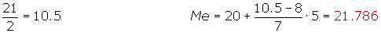
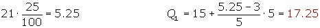
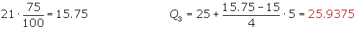
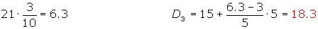
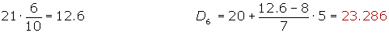
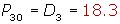
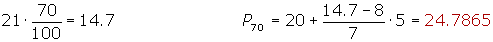
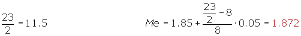
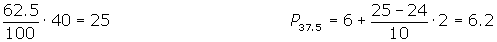

Median Worksheet
1Calculate the median for the following set of numbers: 5, 3, 6, 5, 4, 5, 2, 8, 6, 5, 4, 8, 3, 4, 5, 4, 8, 2, 5, 4.
2Find the median for the following set of numbers:
3, 5, 2, 6, 5, 9, 5, 2, 8, 6.
3Given the series:
3, 5, 2, 7, 6, 4, 9.
3, 5, 2, 7, 6, 4, 9, 1.
Calculate:
The median.
The quartiles 1 and 3.
The deciles 2 and 7.
The percentiles 32 and 85.
4Given the statistical distribution of the table.
| xi | 61 | 64 | 67 | 70 | 73 |
| fi | 5 | 18 | 42 | 27 | 8 |
Calculate the median.
5A statistical distribution is given by the following table:
| [10, 15) | [15, 20) | [20, 25) | [25, 30) | [30, 35) | |
| fi | 3 | 5 | 7 | 4 | 2 |
Calculate:
The median.
The quartiles 1 and 3.
The deciles 3 and 6.
The percentiles 30 and 70.
6Given the statistical distribution:
| [0, 5) | [5, 10) | [10, 15) | [15, 20) | [20, 25) | [25, ∞) | |
| fi | 3 | 5 | 7 | 8 | 2 | 6 |
Calculate:
The median.
The quartiles 2 and 3.
7Given the set:
10, 13, 4, 7, 8, 11 10, 16, 18, 12, 3, 6, 9, 9, 4, 13, 20, 7, 5, 10, 17, 10, 16, 14, 8, 18.
Find their median and quartiles.
8The heights of the players (in centimeters) from a basketball team are represented by the table:
| Height | [170, 175) | [175, 180) | [180, 185) | [185, 190) | [190, 195) | [195, 2.00) |
| No. of players | 1 | 3 | 4 | 8 | 5 | 2 |
Calculate:
1. The mean.
2. The median.
3. The standard deviation.
4. How many players are above the mean plus one standard deviation?
9The following graph is a histogram representing the weight of 100 children:

1. Create the respective table of distribution.
2. If John weighs 72 pounds, how many students are lighter than he is?
3. Calculate the median.
4. It what quartile are 25% of the heaviest pupils found?
10Given the absolute cumulative frequency table:
| Age | Fi |
| [0, 2) | 4 |
| [2, 4) | 11 |
| [4, 6) | 24 |
| [6, 8) | 34 |
| [8, 10) | 40 |
Calculate the difference between the values that are the 10 central ages?
1
Calculate the median for the following set of numbers: 5, 3, 6, 5, 4, 5, 2, 8, 6, 5, 4, 8, 3, 4, 5, 4, 8, 2, 5, 4.
| xi | fi | Fi |
| 2 | 2 | 2 |
| 3 | 2 | 4 |
| 4 | 5 | 9 |
| 5 | 6 | 15 |
| 6 | 2 | 17 |
| 8 | 3 | 20 |
| 20 |
Median
20/2 = 10 Me = 5
2
Find the median for the following set of numbers:
3, 5, 2, 6, 5, 9, 5, 2, 8, 6.
2, 2, 3, 5, 5, 5, 6, 6, 8, 9.
Median
10/2 = 5
3
Given the series:
3, 5, 2, 7, 6, 4, 9.
3, 5, 2, 7, 6, 4, 9, 1.
Calculate:
The median.
The quartiles 1 and 3.
The deciles 2 and 7.
The percentiles 32 and 85.
3, 5, 2, 7, 6, 4, 9.
2, 3, 4, 5, 6, 7, 9.
Me = 5
r = 9 − 2 = 7
Quartiles
Deciles
7 · (2/10) = 1.4 D2 = 3
7 · (7/10) = 4.9 D7 = 6
Percentiles
7 · (32/100) = 2,2 P32 = 4
7 · (85/100) = 5.9 P85 = 7
3, 5, 2, 7, 6, 4, 9, 1.
Median
r = 9 - 1 = 8
Quartiles
Deciles
8 · (2/10) = 1.6 D2 = 2
8 · (7/10) = 5.6 D7 = 6
Percentiles
8 · (32/100) = 2.56 P32 = 3
8 · (85/100) = 6.8 P85 = 7
4
Given the statistical distribution of the table.
| xi | 61 | 64 | 67 | 70 | 73 |
| fi | 5 | 18 | 42 | 27 | 8 |
Calculate the median.
| xi | fi | Fi |
| 61 | 5 | 5 |
| 64 | 18 | 23 |
| 67 | 42 | 65 |
| 71 | 27 | 92 |
| 73 | 8 | 100 |
| 100 |
Median
102/2 = 50 Me = 67
5
A statistical distribution is given by the following table:
| [10, 15) | [15, 20) | [20, 25) | [25, 30) | [30, 35) | |
| fi | 3 | 5 | 7 | 4 | 2 |
Calculate:
The median.
The quartiles 1 and 3.
The deciles 3 and 6.
The percentiles 30 and 70.
| xi | fi | Fi | |
| [10, 15) | 12.5 | 3 | 3 |
| [15, 20) | 17.5 | 5 | 8 |
| [20, 25) | 22.5 | 7 | 15 |
| [25, 30) | 27.5 | 4 | 19 |
| [30, 35) | 32.5 | 2 | 21 |
| 21 |
Median

Quartiles


Deciles


Percentiles


6
Given the statistical distribution:
| [0, 5) | [5, 10) | [10, 15) | [15, 20) | [20, 25) | [25, ∞) | |
| fi | 3 | 5 | 7 | 8 | 2 | 6 |
Calculate:
The median.
The quartiles 2 and 3.
| xi | fi | Fi | |
| [0, 5) | 2.5 | 3 | 3 |
| [5, 10) | 7.5 | 5 | 8 |
| [10, 15) | 12.5 | 7 | 15 |
| [15, 20) | 17.5 | 8 | 23 |
| [20, 25) | 22.5 | 2 | 25 |
| [25, ∞) | 6 | 31 | |
| 31 |
Median
Quartiles
7
Given the set:
10, 13, 4, 7, 8, 11 10, 16, 18, 12, 3, 6, 9, 9, 4, 13, 20, 7, 5, 10, 17, 10, 16, 14, 8, 18
Find their median and quartiles.
First arrange the data from smallest to largest:
3, 4, 4, 5, 6, 7, 7, 8, 8, 9, 9, 10, 10, 10, 10, 11, 12, 13, 13, 14, 16, 16, 17, 18, 18, 20
Median
26/2 = 13.
As the number of data is even, the median is the average of the two central punctuations:
Quartiles
26/4 = 6.5 Q1 = 7
Q2 = Me = 10
(26 · 3)/4 = 19.5 Q3 = 14
8
The heights of the players (in centimeters) from a basketball team are represented by the table:
| Height | [170, 175) | [175, 180) | [180, 185) | [185, 190) | [190, 195) | [195, 2.00) |
| No. of players | 1 | 3 | 4 | 8 | 5 | 2 |
Calculate:
1. The mean.
2. The median.
3. The standard deviation.
4. How many players are above the mean plus one standard deviation?
| xi | fi | Fi | xi · fi | xi2 · fi | |
| [1.70, 1.75) | 1.725 | 1 | 1 | 1.725 | 2.976 |
| [1.75, 1.80) | 1.775 | 3 | 4 | 5.325 | 9.453 |
| [1.80, 1.85) | 1.825 | 4 | 8 | 7.3 | 13.324 |
| [1.85, 1.90) | 1.875 | 8 | 16 | 15 | 28.128 |
| [1.90, 1.95) | 1.925 | 5 | 21 | 9.625 | 18.53 |
| [1.95, 2.00) | 1.975 | 2 | 23 | 3.95 | 7.802 |
| 23 | 42.925 | 80.213 |
Mean

Median

Standard Deviation

4
x + σ = 1.866+ 0.077 = 1.943
This value belongs to a percentile that is in the penultimate interval.


There are only 3 players above x + σ.
9
The following graph is a histogram representing the weight of 100 children:
1. Create the respective table of distribution.
2. If John weighs 72 pounds, how many students are lighter than he is?
3. Calculate the mode.
4. Calculate the median.
5. It what quartile are 25% of the heaviest pupils found?
1
| xi | fi | Fi | |
| [60,63) | 61.5 | 5 | 5 |
| [63, 66) | 64.5 | 18 | 23 |
| [66, 69) | 67.5 | 42 | 65 |
| [69, 72) | 70.5 | 27 | 92 |
| [72, 75) | 73.5 | 8 | 100 |
| 100 |
2
5 + 18 + 42 + 27 = 92 students lighter than John.
Median
4
25% of the heaviest students are found in the third quartile.
10
Given the absolute cumulative frequency table:
| Edad | Fi |
| [0, 2) | 4 |
| [2, 4) | 11 |
| [4, 6) | 24 |
| [6, 8) | 34 |
| [8, 10) | 40 |
Calculate the difference between the values that are the 10 central ages?
| xi | fi | Fi | |
| [0, 2) | 1 | 4 | 4 |
| [2, 4) | 3 | 7 | 11 |
| [4, 6) | 5 | 13 | 24 |
| [6, 8) | 7 | 10 | 34 |
| [8, 10) | 9 | 6 | 40 |
| 40 |

The 10 students represent 25% of the central distribution.
Find: P37.5 y P62.5.


The 10 central ages are in the interval: [4.61, 6.2] .